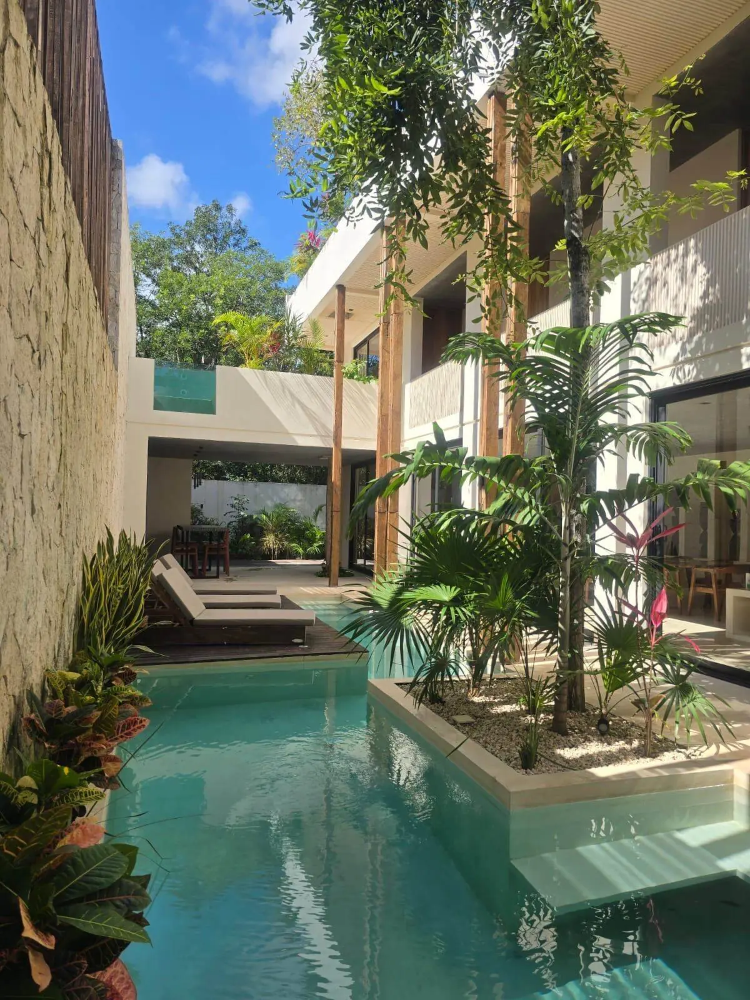

The format that works in Puerto Aventuras: 10–30 keys around the marina or on the beach, within the community rules. We take a boutique hotel from feasibility and design through permits, construction, FF&E and the punch list before opening, under one fixed-price contract, with weekly reports for owners who live abroad.

Land use, density, height and the number of keys the lot really supports.
Architecture, engineering, environmental review, licence and Civil Protection.
Structure built for salt, humidity and hurricanes, with quality control on every pour.
Wastewater treatment, cisterns, solar and backup power where the grid is weak.
Furniture, lighting, linens and local craft, purchased and installed.
Punch list, testing, operating licences and handover to your operator.
Puerto Aventuras is a gated marina community with condo-hotels, small hotels around the marina and resorts on the beach. The HOA rules, marina access and salt exposure shape every project; costs run about 11% above Cancún.
Small hotels carry the same systems as big ones — fire detection, wastewater treatment, backup power, hot water, laundry — spread over fewer keys, so the cost per key is higher than owners expect. The other surprises are FF&E bought late, a kitchen sized for a restaurant that was never planned, and installations that cannot be maintained on site. We price all of it from day one.
Design and permits usually take 4–8 months; construction of 8–30 keys 10–16 months, plus 1–2 months of FF&E and pre-opening.
| Item | Cost |
|---|---|
| Construction, boutique / 4★, per m² | $19,000–$27,000 |
| Construction per key (≈60 gross m²) | $1,130,000–$1,600,000 |
| FF&E and OS&E per key | $280,000–$670,000 |
| 12-key boutique hotel (≈720 m²), construction | $13.5M–$19.2M |
| 20-key boutique hotel (≈1,200 m²), construction | $22.6M–$32M |
| Design, permits and supervision | 8–12% of construction |
In Puerto Aventuras: Hotel renovation · Hotel construction · Facades & hurricanes · MEP & energy
Boutique hotel construction in other towns: Playa del Carmen · Bacalar · Holbox · Isla Mujeres · Cozumel · Akumal · Mahahual · Tulum · Puerto Morelos
Hotels: Hotel room renovation · Cost to build a hotel · Hotel renovation cost per room · Cost to build a boutique hotel
Boutique hotels, Riviera Maya · Hotel cost calculator · Hotel renovation in the Riviera Maya · Hotel construction services · Hotel permits
Send the plans, the address or the room count; we visit, survey the hotel and send a line-item budget. Reply in 2 minutes.
Quote on WhatsAppFideicomiso: how foreigners own coastal property · Buying land in Mexico: due diligence · Concierge construction service · Managing a build from abroad · Build or buy in Playa del Carmen? · How long a build takes in Mexico · Contractor stopped? Finishing a stalled build · Closing on property: process and costs · Where to build: area by area · Cost to build a house in Mexico · Land use, COS and CUS · Soils studies on limestone
Your review helps other owners decide, and helps us improve.
Write a reviewRead our Google reviews